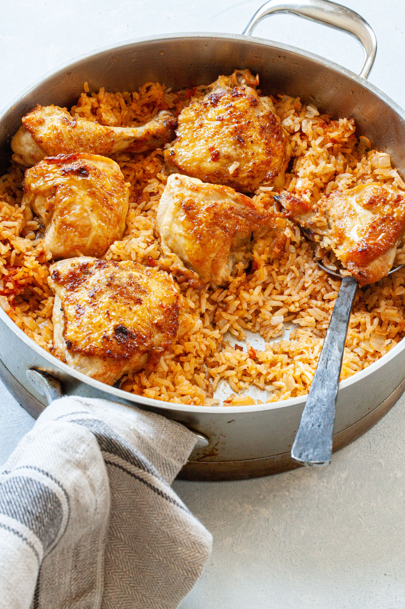

Arroz con Pollo (Chicken and Rice)

Description
The Classic Caribbean and Spanish Meal--Arroz con Pollo--is a popular staple in the Caribbean kitchen. Make
Arroz con Pollo tonight--everyone loves an easy rice and
chicken dish.
Ingredients
- 1 (3 1/2) pound chicken, cut into 8 pieces
- Adobo with Pepper, to taste
- 3 tablespoons Goya Extra Virgin Olive Oil
- 1 cup yellow onion, finely chopped
- ¾ cup green bell pepper, finely chopped
- 1 ½ teaspoons Goya Minced Garlic
- 1 ½ cups Canilla Extra Long Grain Rice
- 1 packet Goya Powdered Chicken Bouillon
- 1 packet Sazon Goya with Azafran
- ¼ cup Goya Pitted Alcaparrado, sliced
- 1 (4 ounce) jar Goya Fancy Sliced Pimientos
- ½ cup Goya Frozen Peas, thawed
Steps
- Using paper towels, pat chicken dry. Season chicken with Adobo. Heat oil in caldero, or large heavy pot over
medium heat. Cook chicken, in batches, until brown on all sides, 7-10 minutes; set aside.
- Stir onions, peppers and garlic into pot; cook until soft, about 5 minutes. Add rice, bouillon and Sazon to
pot; cook, stirring constantly, until rice is completely coated in oil mixture, about 1 minute.
- Stir in 3 cups water; bring to a boil. Add alcaparrado and chicken (skin-side up) to pot. Cover pot, reduce
heat to low and simmer until water is absorbed, rice is tender and chicken is cooked through, about 25
minutes
- To serve, using fork, fluff rice; garnish with pimiento strips and peas.